Maps and spatial models
Does hay biomass fall with elevation on a mountain plateau? The meadows' coordinates and the map, the elevation read from a raster, Moran's I of a model's residuals, an additive model with a spatial smooth, and a GeoPackage for QGIS.
The data are simulated. No meadow was cut and the terrain is invented: the table and the elevation model were made by the script cartes.R, with a fixed seed, for this tutorial. The biomass falls by 0.8 g/m² per metre of elevation, and a smooth pattern over the plateau (soils, the farms' manuring) adds to it.
The question and the data
The hay of 90 mountain meadows is weighed at the first cut, on a plateau of 12 km by 9 km. Does the biomass fall with elevation? And what does the map say of what elevation doesn't explain?
Download meadows.csv (90 rows, one per meadow) and the elevation model elevation.tif (a GeoTIFF of 13 KB), into the same folder:
| Column | Content |
|---|---|
| meadow | the row's name: S01 to S90 |
| X_L93, Y_L93 | the meadow's place in Lambert-93, in metres |
| biomass | the hay's dry biomass at the first cut, in g/m² |
The table has no elevation: it comes from the elevation model, a raster of 50 m cells, as IGN or Copernicus distribute them. Open the table with File › Open (Ctrl+O): 90 observations and 3 variables.
1. The coordinates and the map
Plots › Map (also under the project in the explorer). The first time, the view asks which two
variables give each observation's place, and in which coordinate system. Nuée proposes them from
their names: X_L93 and Y_L93, in Lambert-93 (EPSG:2154).


Click Use these coordinates. They are saved with the project, and Ctrl+Z takes them back.
Longitudes and latitudes in degrees would be WGS 84 (EPSG:4326); a UTM zone, another EPSG code.
Colour: biomass:

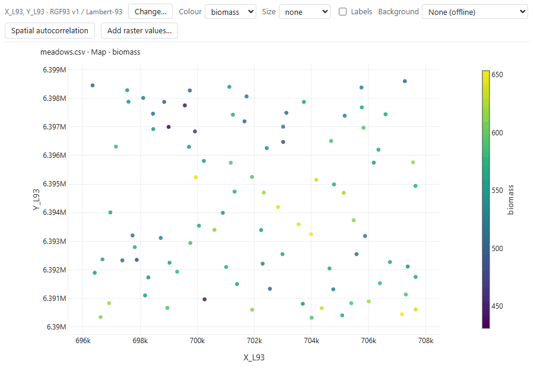

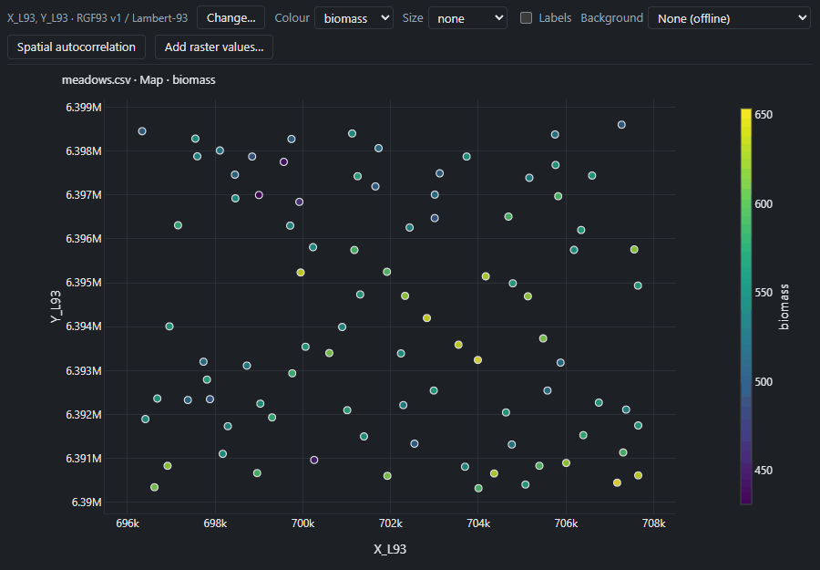
The points are drawn with the same scale on both axes, without a background: nothing leaves the computer. Background offers OpenStreetMap or IGN's maps and aerial photographs, downloaded when chosen. The biomass varies from 431.2 to 653.4 g/m², by patches: low in the north-west, higher in the centre and the south.
2. The elevation from a raster
Edit › Add raster values (or the map's button) reads a raster's value at each observation's place.
Choose files…: elevation.tif.


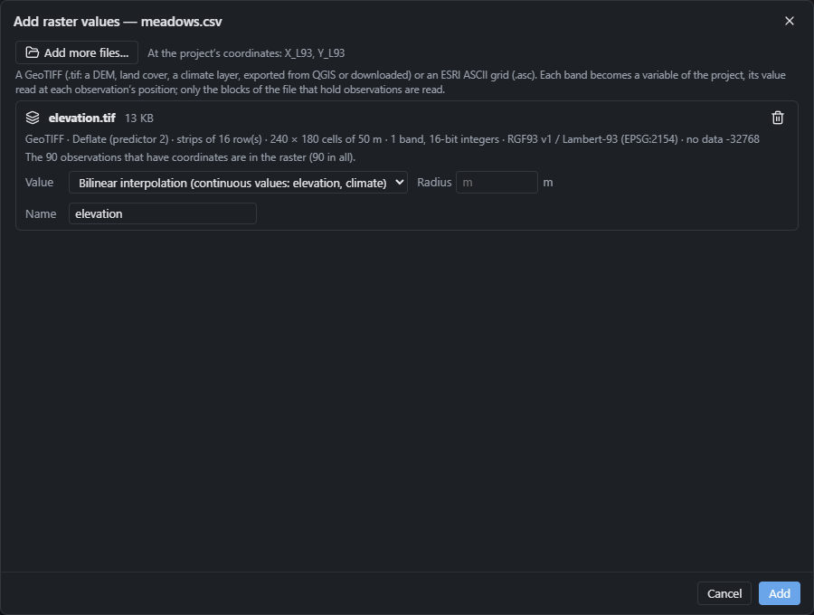
Before adding, Nuée says what the file is: 240 × 180 cells of 50 m, one band of 16-bit integers, in
Lambert-93, and all 90 meadows are inside it. For a continuous value such as an elevation, it
proposes the bilinear interpolation of the four nearest cells; a land cover would take the
observation's cell, or the majority class within a radius. The band becomes a variable named after
the file, elevation. Click Add: 90 of the 90 meadows have a value (Plots › Variable
statistics gives its range: 1138.4800 to 1334.2024 m). Ctrl+Z removes the variable; the Methods
text of a model that uses it will say where it comes from.
3. A linear model, and its conditions
Model › Which analysis?: tick The effect of variables on one response, choose biomass.
Nuée sees a measurement, proposes elevation as X, and the project's coordinates: it recommends the
linear regression, says to look at the spatial autocorrelation of its residuals after the fit, and
offers an additive model with a spatial smooth beside it.


Click Open New model, already filled in, then Fit. The model, M1, is biomass ~ elevation.

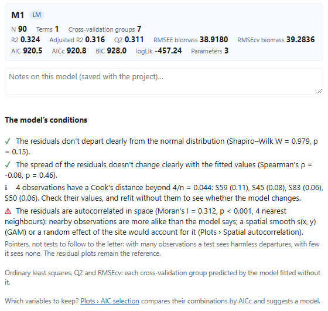

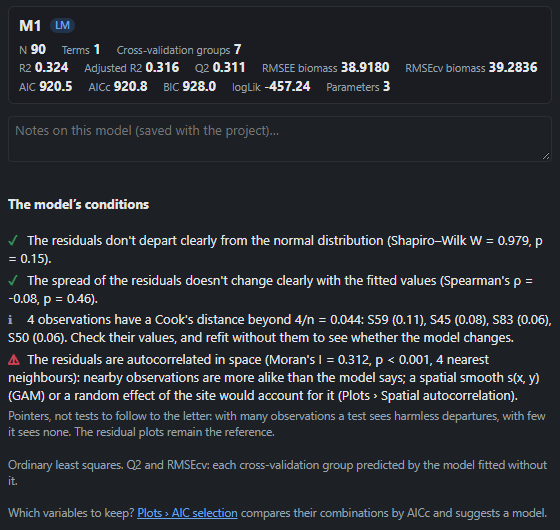
The biomass falls with elevation: −0.8056 g/m² per metre (95% CI −1.0520 to −0.5591, p = 4.8e-9, in the Coefficients view), and elevation explains a third of its variation (R² = 0.324; Q² = 0.311 in cross-validation). The model conditions check the residuals: their distribution (Shapiro–Wilk p = 0.15) and their spread are fine, four meadows weigh more than the others on the fit (Cook's distance), and the last condition is in red: the residuals are autocorrelated in space (Moran's I = 0.312, p < 0.001). Nearby meadows depart from the model in the same way.
4. Moran's I of the residuals
Why it matters: the tests of a model take its residuals as independent. Ninety meadows whose departures resemble those of their neighbours carry less information than ninety independent ones, and the p and intervals are too optimistic (Legendre, 1993).
Plots › Spatial autocorrelation, with M1 chosen: Values: M1 · Residuals.

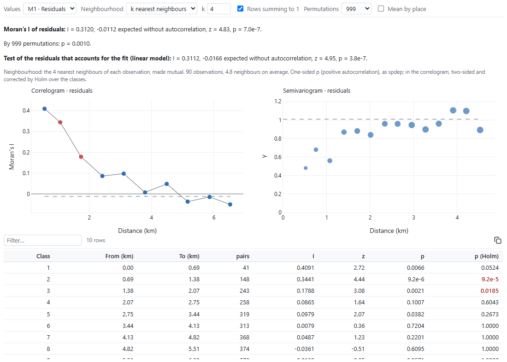

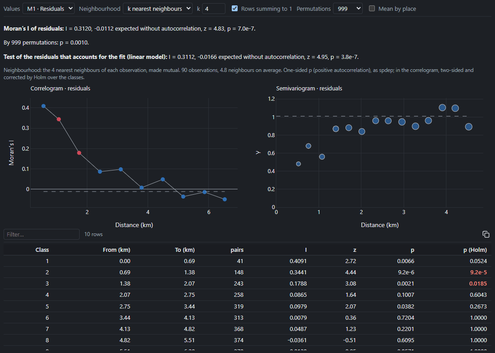
Moran's I compares each residual with those of its neighbours, here the 4 nearest meadows (made mutual: 4.8 neighbours on average). Without autocorrelation it would be near −0.0112; it is 0.3120, z = 4.83, p = 7.0e-7, and none of 999 permutations of the residuals between the meadows gave as much (p = 0.0010). For a linear model, the second line is the test that accounts for the fit (Cliff and Ord, 1981): I = 0.3112, p = 3.8e-7.
The correlogram gives Moran's I by classes of distance: 0.41 below 0.69 km, 0.34 from 0.69 to 1.38 km, 0.18 from 1.38 to 2.07 km, then below 0.1; the red points are significant after Holm's correction over the classes. The semivariogram says the same thing the other way round: half the squared difference between two residuals grows with their distance, and reaches the variance (dashed) at about 2 km. The residuals are alike up to about 2 km.
On the map, Colour: M1 · residual (the standardized residuals):

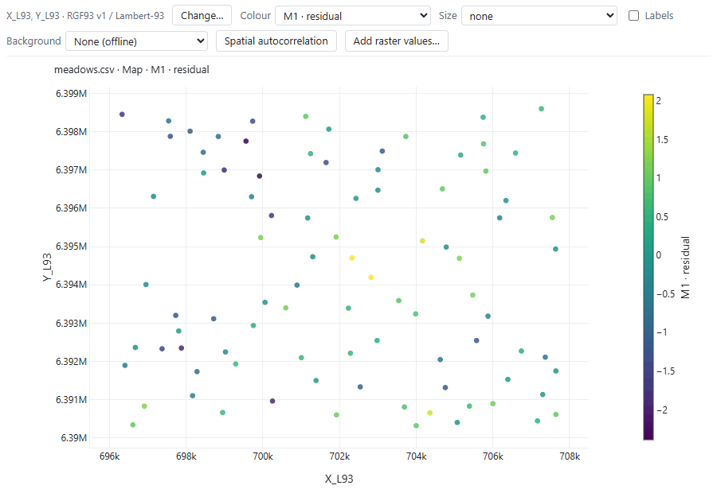

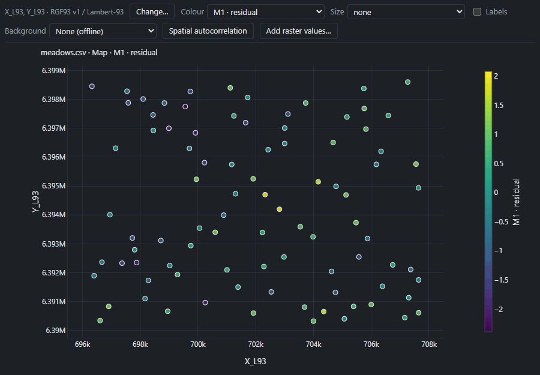
The model overestimates the biomass of the north-west (negative residuals) and underestimates that of the centre and the east: something other than elevation, a soil or the farms' practices, is organized in space.
5. An additive model with a spatial smooth
In Model › Which analysis?, open Additive model with a spatial smooth among the alternatives:
New model sets a GAM, its distribution normal, and ticks Spatial smooth s(X_L93, Y_L93).

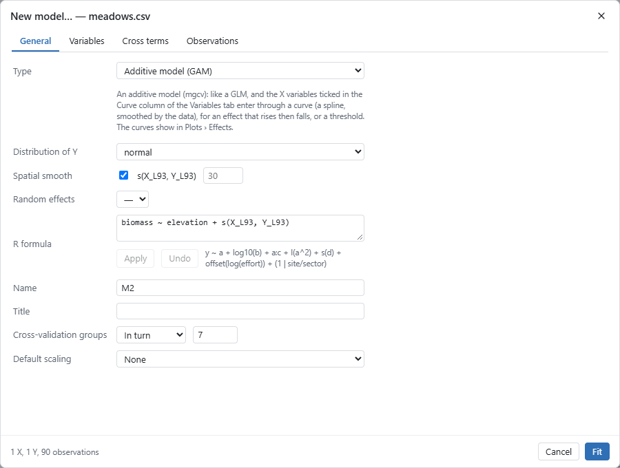

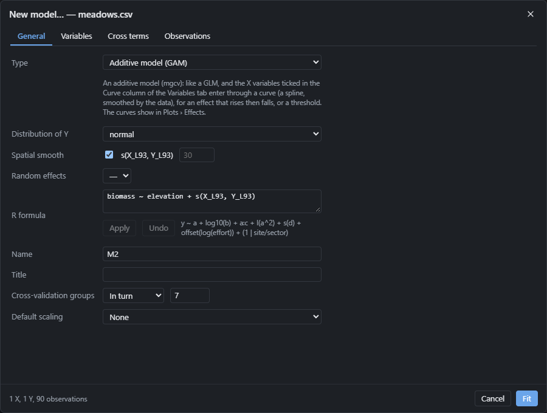
The model keeps elevation as a straight line, and adds a smooth surface of the coordinates, a thin plate spline (Wood, 2003): it takes up the spatial structure elevation doesn't explain, as smooth as the data ask. Its basis dimension is 30 at most (the box beside it); REML chooses how smooth it is. Click Fit: the model is M2.

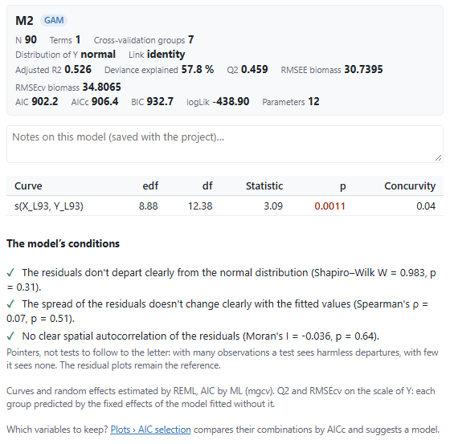

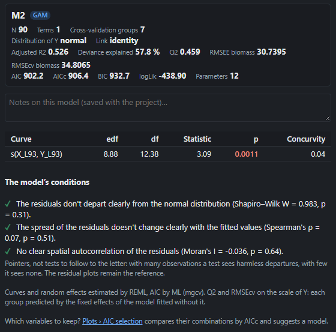
| M1, linear | M2, with the spatial smooth | |
|---|---|---|
| elevation (g/m² per m) | −0.8056 [−1.0520, −0.5591] | −0.8476 [−1.1101, −0.5850] |
| adjusted R² | 0.316 | 0.526 |
| Q² (cross-validation) | 0.311 | 0.459 |
| AIC | 920.5 | 902.2 |
| Moran's I of the residuals | 0.312, p < 0.001 | −0.036, p = 0.64 |
The smooth uses 8.88 effective degrees of freedom (edf; 1 would be a plane) and is significant (p = 0.0011); its concurvity, 0.04, says that elevation doesn't explain it: the two don't compete. The AIC falls by 18 points, the cross-validated Q² rises from 0.311 to 0.459, and no autocorrelation is left in the residuals. Elevation keeps its effect, −0.85 g/m² per metre, with a slightly wider interval: the model is no longer too sure of itself. The data were simulated with −0.8.
The smooth's value at each meadow is a column of M2's results; on the map, Colour: M2 · s(X_L93, Y_L93):

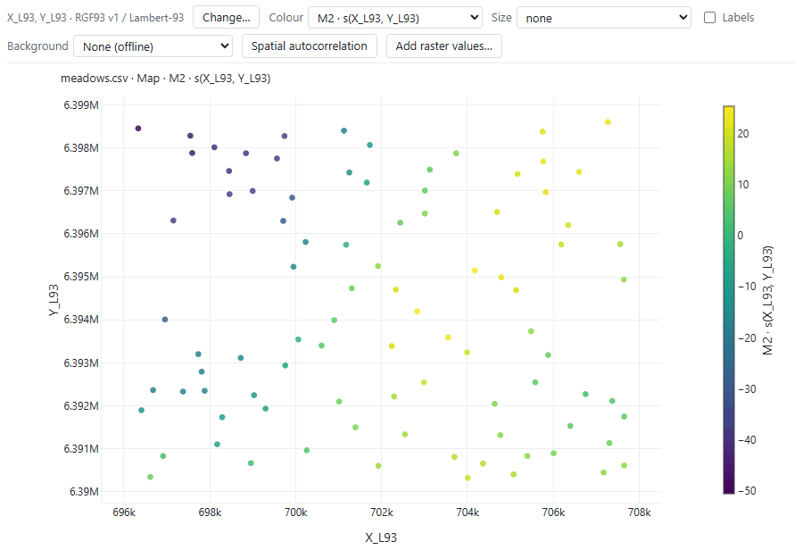

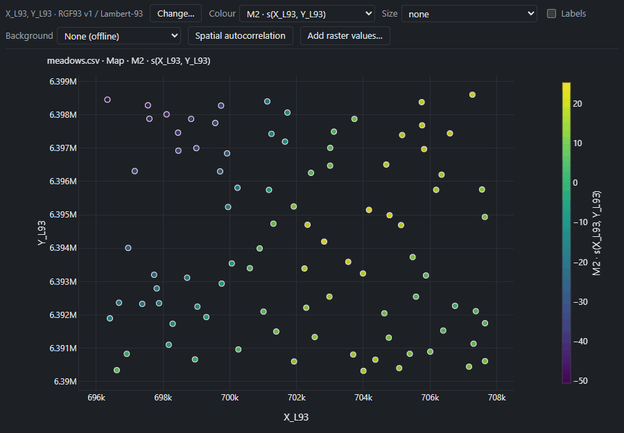
It goes from −50.5 g/m² in the north-west to +25.4 g/m² in the east: what the place adds to the biomass once elevation is accounted for. It describes; it doesn't explain: soil maps or the farms' records would say why.
6. A GeoPackage for QGIS
File › Export data: once the project has coordinates, the export offers GeoPackage (QGIS):


The file holds one point per meadow in Lambert-93, with all its columns (biomass, elevation):
QGIS opens it with its coordinate system, over any map. M2's results go the same way: choose M2,
File › Export model results, GeoPackage: a layer of points with each meadow's fitted value,
residual and smooth, and the tables of the coefficients, the quality and the curves beside it.
File › Open reads a GeoPackage back (points, or the centroids of polygons).
The Methods text
For M2, Model › Text for the Methods section writes, among other things:
Taken from rasters at each observation's position: “elevation” from elevation.tif (GeoTIFF, 50 m cells, RGF93 v1 / Lambert-93; by bilinear interpolation of the four nearest cells).
We fitted a generalized additive model (normal distribution, identity link; Wood, 2017) with 1 term (elevation), a spatial smooth of the coordinates (“X_L93” and “Y_L93”), an isotropic thin plate regression spline (Wood, 2003) of basis dimension 30.
Complete it with the residuals' check: Moran's I of M1's residuals and of M2's, with the neighbourhood (4 nearest neighbours). The report tutorial writes this study up in a document.
Going further
- Edit › Units and descriptions gives biomass its unit, g/m²: the axes and the texts then carry it.
- A random effect of the site, rather than a smooth, suits observations grouped by site; a Mantel test with the geographic distance, a table of species.
- For longitudes and latitudes, the spatial smooth is a spline on the sphere,
s(lat, lon, bs = "sos"). - File › Export to R writes a script that refits M2 with mgcv and draws the smooth on a map.
- The guide: maps, rasters, GeoPackage and spatial autocorrelation, the spatial smooth of a GAM.